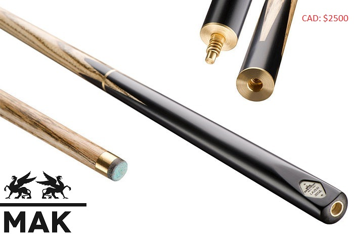
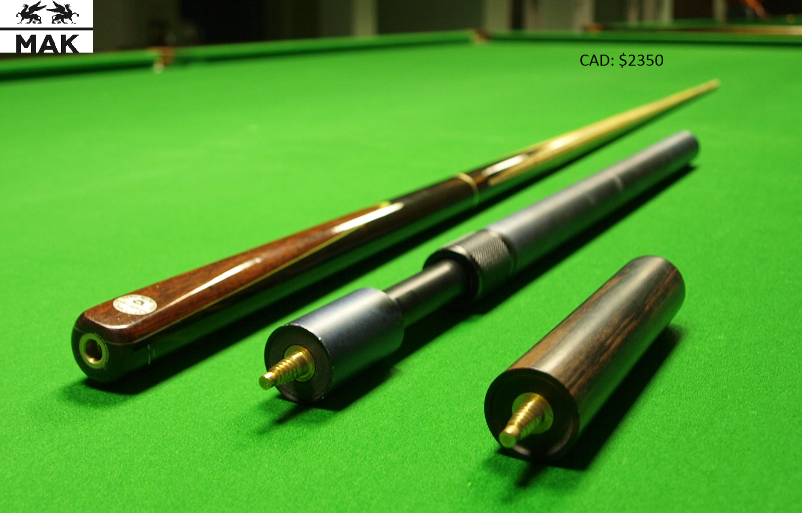
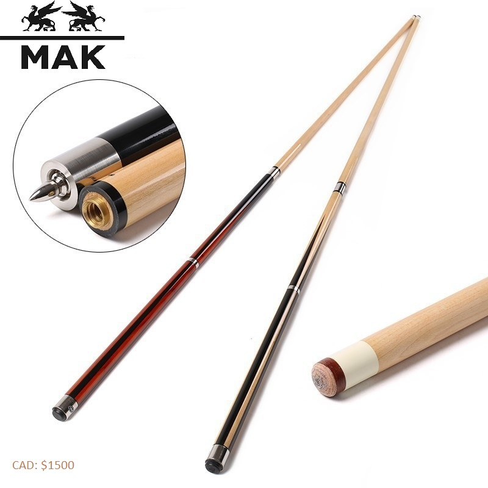
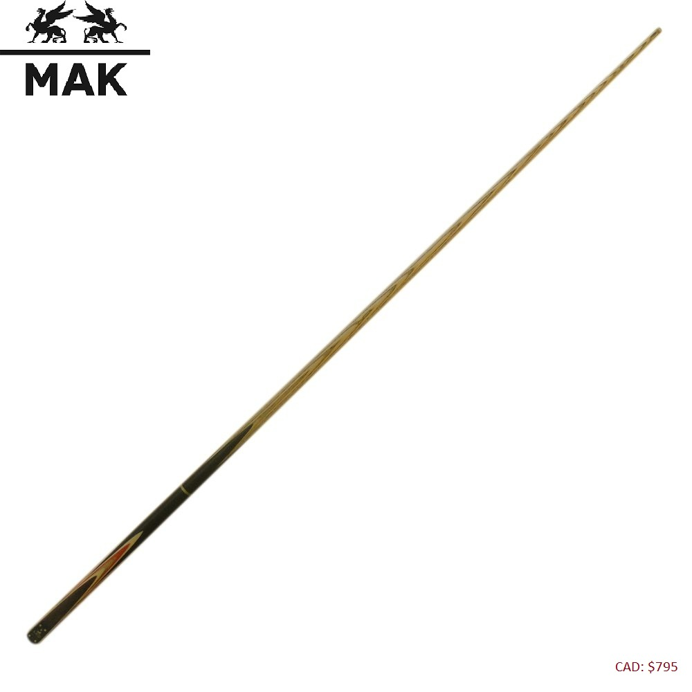
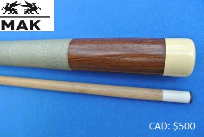

FRENCH CUES

MAK BURWAT RBP-1 ( SPECIAL SALE LIMITED TIME ONLY!!!)
The Pinnacle of MAK- Nothing Higher. Only made from exotic & solid hardwoods, designed in 3/4, 3 piece style only.
Fitted with distinctive Burwat Platinum Badge, with Burwat cotton sleeve and matching joint protectors.
Selected North American Ash
Hand Spliced Butt
Natural Staining
Tulipwood Splice
9.5 mm brass Ferrule
Professionally Fitted Blue Diamond Tip
BCE Rapid Release Joint System
Burwat Cotton Sleeve
Matching Joint Protectors
Distinctive Burwat Plate
Standard Weight- 18-19.5oz

MAK PARADON YORK ( SPECIAL SALE LIMITED TIME ONLY!!!)
The Pinnacle of MAK-Nothing Higher. Only made from exotic & solid hardwoods, designed in 3/4, 3 piece style only.
Fitted with distinctive Burwat Platinum Badge, with Burwat cotton sleeve and matching joint protectors.
Selected North Canadian Ash
Hand Spliced Butt
Artificial Staining
Tulipwood Splice
9.5 mm brass Ferrule
Professionally Fitted red Diamond Tip
BCE Rapid Joint System
White Cotton Sleeve
Matching Joint Protectors
Distinctive white Plate
Standard Weight- 19-20.5oz

MAK ELEGENCE RELEY-6
MAK Elegance is the latest innovation billiard cue from MAK. Its brand new shaft technology has created the 8 piece laminated shaft (L8 Shaft)
which is designed to reduce deflection when striking the cue ball to give players cleaner and more controlled shot.
Length:57"
Tip: Kamui Black Tip
Ferrule: 9.5mm Brass Ferrule
Joint: Brass Bullet Joint
Shaft Wood: 8pc Ash Laminated Shaft
Exotic Butt Wood: Rosewood
Red wood Butt Design: Rosewood butt with 1 set veneer
4 prong inlay red wood front splice
9" rosewood smart extender
MAK Elegance brass badge
joint protector

MAK O'MIN UNION-3
O'min Cues is a well known brand in Thailand and first few manufacturers to use the air lock joint,
even until now for maximum performance.
Length:57"
Tip: Omin Red Laminated Tip
Ferrule: 9.5mm Brass Ferrule
Joint: Quick release air-lock joint
Shaft Wood: 8pc Ash Laminated Shaft
Exotic Butt Wood: Rosewood
Red wood Butt Design: Rosewood butt with 1 set veneer
Hand spliced solid top quality "Ebony Butt"
9" rosewood smart extender
One Piece and 3/4 joint available
joint protector

MAK PERADON KING ( SPECIAL SALE LIMITED TIME ONLY!!!)
King 3/4 Jointed Cue, crafted by Peradon in England.
This full size, 57 inch, ¾ jointed cue is crafted by Peradon in England
from the highest grade, kiln dried, North American Ash and exotic Ebony.
Cue Length- 57" Full Size
Shaft Length- 42" (107cm) - plus 1" (2.5cm) for the protruding male joint
Butt Length- 16" (40.5cm)
Tip- 9 ½ to 10mm Elkmaster
Shaft- Extensively Selected kiln dried North American Ash
Butt- Hand spliced genuine Ebony
Butt Decoration- Four large Olivewood splices
Joint- Solid brass, 'Quick Action' 16"
Butt End Joint- Yes, Quick Action
Weight- 18oz up to 19.5oz
Snooker in its modern form originated in the latter half of the 19th century.
Billiards had been a popular activity amongst British Army officers stationed in India, and variations
on the more traditional billiard games were devised. One variation, devised in the officers' mess in Jabalpur
during 1874 or 1875,[8] was to add coloured balls in addition to the reds and black which were used for pyramid pool and life pool.